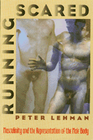

<body bgcolor="#FFFFFF" text="#000000" link="#0000FF" vlink="#CC0000" alink="#CC0000"><center><hr width="350" size="1" align="center" noshade>Literal and symbolic representations of the nude male body exposed as cultural taboos<hr width="350" size="1" align="center" noshade><p><a href="https://cdcshoppingcart.uchicago.edu/Cart/ChicagoBook.aspx?ISBN=9781566390996&&PRESS=temple" target="_top">Buy this book!</a> | <a href="https://cdcshoppingcart.uchicago.edu/Cart/Cart.aspx?PRESS=temple" target="_top">View Cart</a> | <a href="https://cdcshoppingcart.uchicago.edu/Cart/Cart.aspx?PRESS=temple" target="_top">Check Out</a></p><p></p></center><!--none//--><h1>Running Scared</h1>
<H2>Masculinity and the Representation of the Male Body</H2>
<h3>Peter Lehman</h3>
<P>cloth 1-56639-099-0 $39.95, Oct 93, <FONT COLOR=#990033>Out of Print</FONT>
<br>paper 1-56639-222-5 $31.95, Feb 96, <FONT COLOR=#990033>Out of Print</FONT>
<BR> 256 pp
6.5x9.25
28&nbsp;halftones
</P><h3 align="center"><P><font color="#996633"><I>Book Alert</I>'s University Press Book of Choice, November,
1993</font></P>
</H3>
<BLOCKQUOTE><I>"Writing with clarity and conviction, Lehman has published an essential text for anyone interested in the study of masculinity and its depictions."</I>
<br>&#151<b><I>Film Quarterly</I></b><I></I></BLOCKQUOTE>
<p>Our patriarchal culture keeps the male body&#151and especially male genitals&#151out of sight. This scheme, Peter Lehman argues, maintains the "male mystique" and preserves the power of the phallus. Society's intentional blindness to male sexual representation cultivates "good taste" and avoids perversion. Lehman draws back the curtain. <I>Running Scared</I> brings representations of phallic masculinity into the spotlight at last, documenting the pervasive anxiety underlying images of the male body.
<p>Lehman confronts cultural taboos primarily through his re-reading of films, as well as through analyses of novels, paintings, photographs, popular music, jokes, and videos. He examines the male polarity of hero/vulnerable failure through many lenses, from a study of the symbolic enculturation of males in feral child films&#151<I>The Wild Child</I>, <I>Kaspar Hauser</I>, and <I>Greystroke</I>&#151through an analysis of the loss of culturally sanctioned power in <I>Rio Bravo</I>.
<p>Abandoning distinctions between "high art" and popular culture, <I>Running Scared</I> invokes Jim Thompson's noir novel <I>The Nothing Man</I> along with works by Hemingway and compares hard-core pornography with classical cinema. Lehman examines the work of openly gay filmmakers such as Almodovar and Fassbinder to see what they say about heterosexual male and female spectatorship. Focusing on Nagisa Oshima's <I>In the Realm of the Senses</I>, he compares Asian representations of the male body to Western representations.
<p>Exploring the reverse of the macho image&#151the vulnerable, passive, masochistic, or humiliated dreamer&#151in the concluding chapter, Lehman addresses the fears and homophobia of heterosexual men that have resulted in near silence on issues of the representation of male sexuality.
<BR>&nbsp;<h2>Excerpt</h2><P>Excerpt available at <a href="http://www.temple.edu/tempress">www.temple.edu/tempress</a></p>
<BR>&nbsp;<h2>Reviews</h2>
<p><I>"Lehman makes a major contribution to the fields of film and cultural studies. While the past two decades have been dominated by attention to the area of women's studies and the female body, this is one of the first books to focus on masculinity and the male body."</I>
<br>&#151<b>Lucy Fischer</b>, University of Pittsburgh
<p><I>"</I>Running Scared<I> reveals how the male body image is marked with masculinity (and femininity), how its physiques, scars, injuries and actions carry meaning within a nexus of language, image, power, and sexuality. The Western hero, the tragic gangster, the feral child, and endowed porn star, the emasculated veteran, the sexologist's model, the joker and the butt of the joke compose a clenched masculinity in which Lehman uncovers vulnerability, lack and aching desire. Lehman's perceptive and provocative analysis exhibit a passionate scholarship with self-interrogation."</I>
<br>&#151<b>Chris Straayer</b>, New York University
<BR>&nbsp;<h2>Contents</h2><P>
<p>Preface
<br>Acknowledgments
<br>1. Introduction: What Have We Done to Deserve This?"
<br>2. "I Will Suppress Nothing": Sexuality in Male Feral-Child Narratives
<br>3. "I Like Scars, Really": Men Called Scarface, Scar, and Stumpy
<br>4. "No Nothing": The Nothing Man
<br>5. Another Nothing Man: Edward G. Robinson and <I>Scarlet Street</I>
<br>6. "I'll See You in Small Claims Court": Penis-Size Jokes and Their Relation to Hollywood's Unconscious
<br>7. "The Question of the Century": Sexology and the Medical Representation of Male Sexuality
<br>8. An Answer to the Question of the Century: <I>Dick Talk</I>
<br>9. The "Gift" and the "Keepsake": <I>In the Realm of the Senses</I>: Castration Fantasies
<br>10. Conclusion: Running Scared
<br>Bibliography
<br>Illustration Credits
<br>Index
</P><BR>&nbsp;<H2>About the Author(s)</H2>
<table><tr><td valign="top"><img src="/tempress/authors/1117_au.gif" height="90" width="75"></td><td width="100%" valign="middle"><p><b>Peter Lehman</b> is Professor and Director of Graduate Studies in the Department of Media Arts at the University of Arizona. Founding editor of the journal <I>Wide Angle</I> and former president of the Society for Cinema Studies, he has published several other books, including <I>Authorship and Narrative in the Cinema</I> (with William Luhr).</P></td></tr></table>
<BR><H2>Subject Categories</H2>
<p><A HREF="/tempress/general.html" TARGET="_top">General Interest</a>
<BR><A HREF="/tempress/cinema.html" TARGET="_top">Cinema Studies</a>
<BR><A HREF="/tempress/gender.html" TARGET="_top">Gender Studies</a>
</p>
<BR><h2 class="inpageheading">In the series</H2>
<P><I><a href="http://www.temple.edu/tempress/culture.html" onMouseOver="window.status='Click for other books in this series!'; return true;" onMouseOut="window.status=''; return true;" target="_top">Culture and the Moving Image</a></i>, edited by Robert Sklar.
</p><p>The <I>Culture and the Moving Image</I> series, edited by Robert Sklar, seeks to publish innovative scholarship and criticism on cinema, television, and the culture of the moving image. The series will emphasize works that view these media in their broad cultural and social frameworks. Its themes will include a global perspective on the world-wide production of images; the links between film, television, and video art; a concern with issues of race, class, and gender; and an engagement with the growing convergence of history and theory in moving image studies.</p>
<p align="center"><a href="https://cdcshoppingcart.uchicago.edu/Cart/ChicagoBook.aspx?ISBN=9781566390996&&PRESS=temple" target="_top">Buy this book!</a> | <a href="https://cdcshoppingcart.uchicago.edu/Cart/Cart.aspx?PRESS=temple" target="_top">View Cart</a> | <a href="https://cdcshoppingcart.uchicago.edu/Cart/Cart.aspx?PRESS=temple" target="_top">Check Out</a></p><p><font face="Arial" size="1"><a href="copyright.html" onMouseOver="window.status='Web Copyright Policy';return true;" onMouseOut="window.status=''" title="Web Copyright Policy">&copy;</a> 2015 <a href="http://www.temple.edu" target="new" onMouseOver="window.status='Link to Temple University home page';return true;" onMouseOut="window.status=''" title="Link to Temple University home page">Temple University</a>. All Rights Reserved. http://www.temple.edu/tempress/titles/1117_reg.html</font></p>